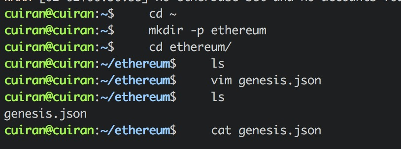
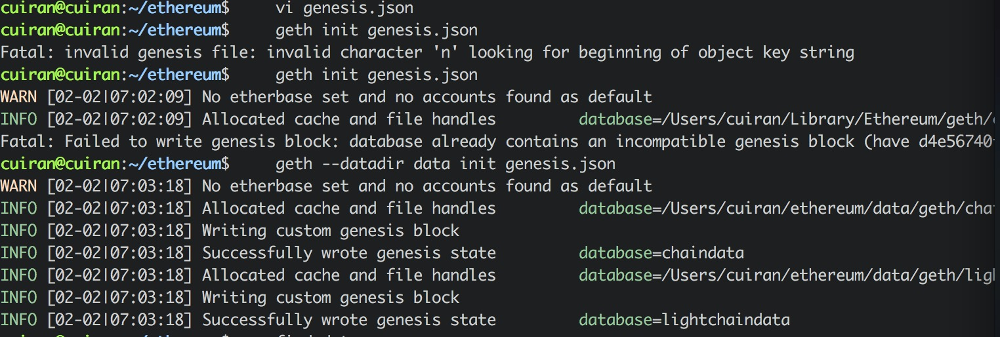

4. Mac平台搭建以太坊¶
4.2. 编译安装¶
git clone https://github.com/ethereum/go-ethereum
sudo apt-get install -y build-essential golang
cd go-ethereum
make geth
4.4. 初始化创世区块¶
在目录ethereum目录下创建文件 genesis.json 文件内容为：
{ "nonce": "0x0000000000000042", "difficulty": "0x020000", "mixhash": "0x0000000000000000000000000000000000000000000000000000000000000000", "coinbase": "0x0000000000000000000000000000000000000000", "timestamp": "0x00", "parentHash": "0x0000000000000000000000000000000000000000000000000000000000000000", "extraData": "0x11bbe8db4e347b4e8c937c1c8370e4b5ed33adb3db69cbdb7a38e1e50b1b82fa", "gasLimit": "0x4c4b40", "config": { "chainId": 15, "homesteadBlock": 0, "eip155Block": 0, "eip158Block": 0 }, "alloc": { } }
下面对上面参数进行解释
mixhash: 与nonce配合用于挖矿，由上一个区块的一部分生成的hash。注意他和nonce的设置需要满足以太坊的Yellow paper, 4.3.4. Block Header Validity, (44)章节所描述的条件。. nonce: nonce就是一个64位随机数，用于挖矿，注意他和mixhash的设置需要满足以太坊的Yellow paper, 4.3.4. Block Header Validity, (44)章节所描述的条件。
difficulty: 设置当前区块的难度，如果难度过大，cpu挖矿就很难，这里设置较小难度
alloc: 用来预置账号以及账号的以太币数量，因为私有链挖矿比较容易，所以我们不需要预置有币的账号，需要的时候自己创建即可以。
coinbase: 矿工的账号，随便填
timestamp: 设置创世块的时间戳
parentHash: 上一个区块的hash值，因为是创世块，所以这个值是0
extraData: 附加信息，随便填，可以填你的个性信息
gasLimit: 该值设置对GAS的消耗总量限制，用来限制区块能包含的交易信息总和，因为我们是私有链，所以填最大。
在终端操作如图所示：


cuiran@cuiran:~/ethereum$ geth --datadir data init genesis.json
WARN [02-02|07:03:18] No etherbase set and no accounts found as default
INFO [02-02|07:03:18] Allocated cache and file handles database=/Users/cuiran/ethereum/data/geth/chaindata cache=16 handles=16
INFO [02-02|07:03:18] Writing custom genesis block
INFO [02-02|07:03:18] Successfully wrote genesis state database=chaindata hash=611596…424d04
INFO [02-02|07:03:18] Allocated cache and file handles database=/Users/cuiran/ethereum/data/geth/lightchaindata cache=16 handles=16
INFO [02-02|07:03:18] Writing custom genesis block
INFO [02-02|07:03:18] Successfully wrote genesis state database=lightchaindata hash=611596…424d04
cuiran@cuiran:~/ethereum$ find data
data
data/geth
data/geth/.DS_Store
data/geth/chaindata
data/geth/chaindata/000001.log
data/geth/chaindata/CURRENT
data/geth/chaindata/LOCK
data/geth/chaindata/LOG
data/geth/chaindata/MANIFEST-000000
data/geth/lightchaindata
data/geth/lightchaindata/000001.log
data/geth/lightchaindata/CURRENT
data/geth/lightchaindata/LOCK
data/geth/lightchaindata/LOG
data/geth/lightchaindata/MANIFEST-000000
data/keystore
4.6. Geth命令测试¶
用户命令测试
#返回钱包管理的账户地址列表
#返回示例：["0x3138e3722fb4280cb67f6e858108136bfa1c9160"]
eth.accounts
#创建账户地址，参数为账户锁定密码，在转账前需要先解锁账户
#我们把这个命令运行两次，创建两个地址，加上默认的，一共有了三个账户地址
personal.newAccount('111111')
personal.newAccount('111111')
#为账户设置别名，方便命令输入
user1=eth.accounts[0]
user2=eth.accounts[1]
#查看地址user1余额,这个地址是测试链默认开通的一个地址，里面初始化有很多币
#我们创建的另外两个地址余额未0
eth.getBalance(user1)
#查看区块高度，现在为0
eth.blockNumber
#转账测试，首先解锁账号user1
#命令运行后要求输入解锁密码，直接回车，默认账号锁定密码为空，返回true成功
personal.unlockAccount(user1)
#从user1向user2转账3个以太币
#命令运行后，提交交易立马回出发挖矿
eth.sendTransaction({from:user1,to:user2,value:web3.toWei(3,"ether")})
#查看区块高度，这时高度为1
eth.blockNumber
#挖矿测试
#geth启动后，自动启动挖矿，这时运行miner.start()，返回为null 无交易的时候#不挖矿，当有交易时自动会触发挖矿流程
#我们可以先停止挖矿
miner.stop()
#提交交易，这时候只提交，查看账户余额，但是未确认
eth.sendTransaction({from:user1,to:user2,value:web3.toWei(3,"ether")})
#启动挖矿，确认交易，再次查看账户余额
miner.start()
#那么挖矿奖励去哪儿了？查看矿工地址
eth.coinbase
#设置矿工地址
miner.setEtherbase(eth.coinbase)
cuiran@cuiran:~/ethereum$ geth --dev console 2>> geth-log
Welcome to the Geth JavaScript console!
instance: Geth/v1.7.3-stable/darwin-amd64/go1.9.3
coinbase: 0xdfa0120507a5d38a9d5f82d2447e635ac3db66a9
at block: 0 (Thu, 01 Jan 1970 08:00:00 CST)
datadir:
modules: admin:1.0 clique:1.0 debug:1.0 eth:1.0 miner:1.0 net:1.0 personal:1.0 rpc:1.0 shh:1.0 txpool:1.0 web3:1.0
> eth.accounts
["0xdfa0120507a5d38a9d5f82d2447e635ac3db66a9"]
> personal.newAccount('123456')
"0x3b9dfdcc0ab06ecb94ee5997346b5b5d5648625b"
> eth.accounts
["0xdfa0120507a5d38a9d5f82d2447e635ac3db66a9", "0x3b9dfdcc0ab06ecb94ee5997346b5b5d5648625b"]
> user1
ReferenceError: 'user1' is not defined
at <anonymous>:1:1
> user1=eth.accounts[0]
"0xdfa0120507a5d38a9d5f82d2447e635ac3db66a9"
> user2=eth.accounts[1]
"0x3b9dfdcc0ab06ecb94ee5997346b5b5d5648625b"
> user1
"0xdfa0120507a5d38a9d5f82d2447e635ac3db66a9"
> user2
"0x3b9dfdcc0ab06ecb94ee5997346b5b5d5648625b"
> personal.unlockAccount(user2,'123456')
true
> eth.getBalance(user1)
1.15792089237316195423570985008687907853269984665640564039457584007913129639927e+77
> eth.getBalance(user2)
0
> miner
{
getHashrate: function(),
setEtherbase: function(),
setExtra: function(),
setGasPrice: function(),
start: function(),
stop: function()
}
> miner.start()
null
> miner.stop()
true
> eth.getBalance(user1)
1.15792089237316195423570985008687907853269984665640564039457584007913129639927e+77
> eth.sendTransaction({from:user1,to:user2,value:8})
"0x37fd82a8f3f783599fb64f7f860b834a65ebae347968a454140b8ff37a652732"
> eth.getBalance(user2)
0
> miner.start()
null
> miner.stop()
true
> miner.stop()
true
> eth.sendTransaction({from:user1,to:user2,value:8})
"0x64ed9fcaa87ac331526d7f41f281515c90c5c261de37b7dd982d02639b42e40c"
> miner.start()
null
> eth.coinbase
"0xdfa0120507a5d38a9d5f82d2447e635ac3db66a9"
> miner.setE
miner.setEtherbase miner.setExtra
> miner.setEtherbase(eth.coinbase)
true
> miner.stop()
true
> eth.getBalance(user2)
16
> eth.blockNumber
2
> eth.sendTransaction({from:user1,to:user2,value:9})
"0x7d9d5792b99eedd662d3629f3cb792b15313c61e145bf8c50c9f7728b6b42757"
> eth.blockNumber
2
> eth.getBalance(user2)
16
> miner.start()
null
> miner.stop()
true
> eth.getBalance(user2)
25
>